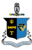
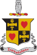
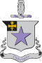
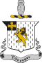
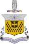
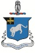

Archives / Chapters
The roll
Chapters
Fifty chapters chartered since 1833, in the order they joined the roll. Each has its coat of arms, its place in the roll, and every mention of it across the scanned volumes.
23 active27 inactive1833–2025
Active chapters
DeltaNew York University1837Active343 vols
ZetaDartmouth College1842Active357 vols
PsiHamilton College1843Active345 vols
XiWesleyan University1843Active355 vols
UpsilonUniversity of Rochester1858Active360 vols
PhiUniversity of Michigan1865Active369 vols
OmegaUniversity of Chicago1869Active363 vols
PiSyracuse University1875Active365 vols
Beta BetaTrinity College1880Active341 vols
EtaLehigh University1884Active332 vols
TauUniversity of Pennsylvania1891Active329 vols
Theta ThetaUniversity of Washington1916Active322 vols
Zeta ZetaUniversity of British Columbia1935Active262 vols
Epsilon NuMichigan State University1943Active172 vols
Gamma TauGeorgia Institute of Technology1970Active100 vols
Epsilon IotaRensselaer Polytechnic Institute1982Active68 vols
Phi DeltaUniversity of Mary Washington1996Active10 vols
Lambda SigmaPepperdine University1998Active26 vols
Alpha OmicronNew Jersey Inst. of Technology1999Active2 vols
Sigma PhiSt. Francis University2007Active9 vols
Phi NuChristopher Newport University2010Active4 vols
Tau EpsilonClemson University2018Active2 vols

Delta OmicronPurdue University2025Active14 vols
Chapters no longer active
ThetaUnion College1833Inactive383 vols
BetaYale University1839Inactive280 vols

SigmaBrown University1840Inactive347 vols

GammaAmherst College1841Inactive353 vols
LambdaColumbia University1842Inactive344 vols
KappaBowdoin College1843Inactive333 vols
AlphaHarvard University1850Inactive150 vols
IotaKenyon College1860Inactive345 vols
ChiCornell University1876Inactive353 vols
MuUniversity of Minnesota1891Inactive331 vols

RhoUniversity of Wisconsin1896Inactive322 vols
EpsilonUniversity of California, Berkeley1902Inactive108 vols
OmicronUniversity of Illinois1910Inactive308 vols
Delta DeltaWilliams College1913Inactive287 vols
NuUniversity of Toronto1920Inactive310 vols
Epsilon PhiMcGill University1928Inactive268 vols

Epsilon OmegaNorthwestern University1949Inactive229 vols
Theta EpsilonUniversity of Southern California1950Inactive75 vols
Nu AlphaWashington and Lee University1970Inactive69 vols
Chi DeltaDuke University1973Inactive101 vols
Zeta TauTufts University1981Inactive68 vols
Phi BetaCollege of William and Mary1984Owl Club36 vols
Kappa PhiPennsylvania State University1989Inactive35 vols
Beta KappaWashington State University1991Inactive36 vols
Beta AlphaMiami University of Ohio1992Inactive25 vols
Delta NuKeene State College2009Inactive6 vols

Theta PiGeorgia State University2014Inactive5 vols